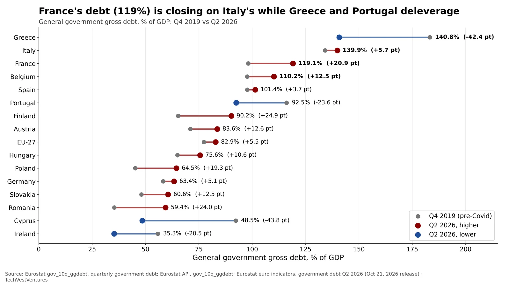

Q5. Debt Levels

General government gross debt as % of GDP, Q4 2019 vs Q2 2026 (Eurostat gov_10q_ggdebt, released Oct 21, 2026). France rose +20.9 points to 119.1% (from 115.4% a year earlier); the gap to Italy (139.9%) has narrowed from 36 to 21 points. Belgium (110.2%), Finland, Austria, Poland and Romania also climbed, while Greece (183% to 141%), Portugal, Cyprus and Ireland cut debt sharply.
- Year-on-year (Q2 2025 to Q2 2026): France +3.7 pt, Belgium +3.8, Italy +2.3, Poland +6.7, Germany +2.0, Greece -11.2.
- Rising debt ratios mean larger refinancing walls each year, rolled over at today's higher yields rather than the near-zero rates of 2019-2021.
Note: Debt-to-GDP is a stock measure; it does not show maturity profile. Greece's high ratio is mostly long-dated official-sector loans at low fixed rates, so its refinancing risk is lower than the level suggests.
Sources: Eurostat gov_10q_ggdebt, quarterly government debt Eurostat API, gov_10q_ggdebt Eurostat euro indicators, government debt Q2 2026 (Oct 21, 2026 release)